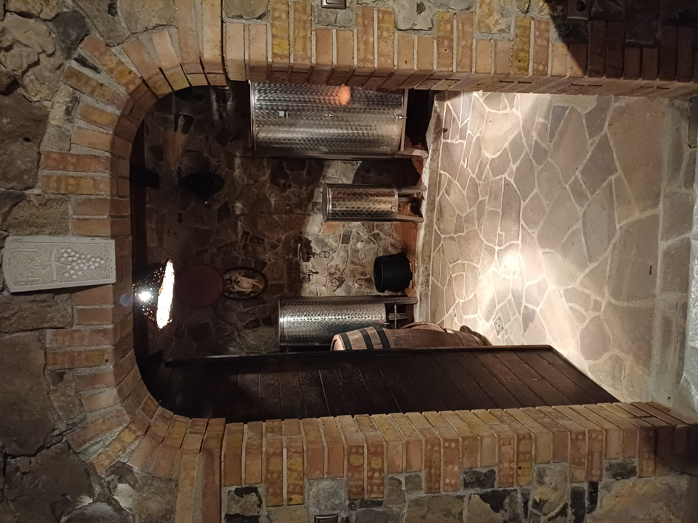

01
Teran
Globoka rubinasta barva, značilna svežina in prepoznaven kraški značaj.
Vino, rojeno iz kraške zemlje, burje in tradicije.
Odkrijte naša vinaVinarstvo Filipčič izhaja iz ljubezni do kraške zemlje in spoštovanja do dela, ki ga zahteva vinograd. Naša zgodba se začne pri trti in nadaljuje v kleti, kjer vsaka letina dobi svoj značaj.
Vino nastaja počasi. Brez bližnjic in brez potrebe, da bi skrili tisto, kar nam daje Kras. Želimo ustvariti vino, ki je iskreno, prepoznavno in povezano s krajem, iz katerega prihaja.
Naša vina nastajajo iz sort, ki so tesno povezane s kraškim prostorom in našo vinogradniško tradicijo.
Globoka rubinasta barva, značilna svežina in prepoznaven kraški značaj.
Aromatično in sveže vino, ki združuje sortni značaj z izrazom kraškega terroirja.
Avtohtona kraška sorta z mineralnostjo, svežino in elegantnim značajem.
Ko grozdje zapusti vinograd, se njegova zgodba nadaljuje v kleti. Tukaj pustimo času, da opravi svoje delo. Vsaka posoda, vsak sod in vsaka letina imajo svoj pomen.



Na Krasu se znanje o vinogradništvu prenaša iz generacije v generacijo. Spoštujemo način dela naših prednikov, hkrati pa iščemo svoj izraz.